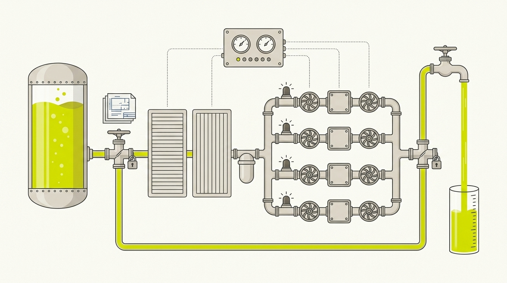

An idea in. Working software out.
IDC is an autonomous, agentic software-development pipeline. It carries an idea from intake to merged, reviewed code — planning, building, and reviewing on its own and automerging when clean. It stops to ask you exactly one question, once, at the top.

IDC is an autonomous, agentic software-development pipeline. You start an idea in Think; it crystallizes into a PRD (what it does) and a TRD (how it's built) and reaches the one gate — a reviewable Think PR you merge to admit it. From there the pipeline plans, builds, and reviews on its own and automerges clean code.
Everything runs autonomously and automerges when green; the pipeline intervenes only where a real derailment would otherwise ship. The full picture lives in the mental model.
Five commands, one direction of flow.
Think → the one gate
Free brainstorm, then crystallize a function-first PRD + TRD and open the Think PR gate. Merge to admit — the only place the pipeline asks you for anything.
Plan into parallel waves
Admitted idea → goal-contract issues. Work is sliced on two axes (domain × phase/wave) into a matrix, deconflicted so no two items touch the same files, then fanned by the sequencer into parallel waves.
The build triplet
Each issue runs a build triplet — implementer → review → finisher. Independent review screens every PR; nothing ships that isn't green; automerge on pass.
The return path
The one controlled way back. When a finding is genuinely upstream, the Recirculator heals doc/reality drift in one PR — or rides the Think-PR gate for a requirements change.
Run it end to end
Turn it on and the whole pipeline runs on its own — admitted considerations → plan → build eligible waves as they land → exit when nothing actionable remains.
Three runtimes. Real multi-agent throughput.
IDC is runtime-neutral — one process against three primitives, one thin adapter each. A whole wave of issues builds at once, one agent per parallel-safe issue.
Claude Code Default
Durable workers are Claude Teams teammates — one session per issue in the wave, coordinated by a single merger — plus Agent/Workflow fan-out for planning and review swarms.
Codex Supported
Durable workers are app-server threads over JSON-RPC, with native spawn_agent/wait_agent fan-out (≤6) or codex exec --ephemeral processes. Runs untiered, at highest effort.
Pi Experimental
Standing residents over coms-net, a local Bun HTTP/SSE hub — flat peers, no master, with liveness, coordination, and an atomic merge lease; the board stays the source of truth.
Opt-in, per repo.
Register the marketplace once, then install at project scope inside each repo you want governed — never the default user scope.
# once per machine — register the marketplace claude plugin marketplace add llamallamaredpajama/idc-workflow # per repo — install AND enable for THIS repo only cd your-repo claude plugin install idc@idc-workflow --scope project